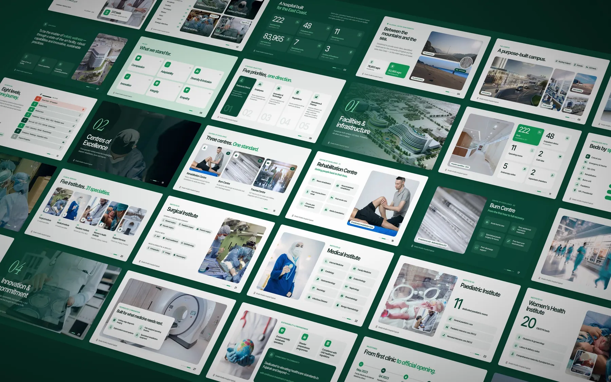

Sheikh Khalifa Hospital
Client work
A company profile redesign for a specialist hospital on the UAE's East Coast.
A dense brief, made readable in seconds: 222 beds, 31 specialties and three centres of excellence for Sheikh Khalifa Hospital Fujairah.
The Clinical Light direction uses cool whites, deep forest green and one emerald accent. A filled medical icon system and big-number layouts carry the facts, and a chapter rail in the footer replaces the usual page counter. Nothing was invented: the new slides re-present the client's own facts.
